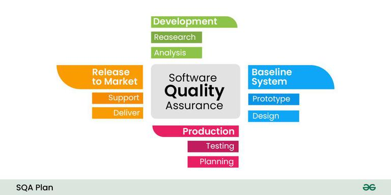

8.4 SQA Plans
An SQA Plan (Software Quality Assurance Plan) is a formal document that defines the quality assurance activities, responsibilities, standards, and evaluation procedures for a specific software project. Its main goal is to guarantee that the product delivered to the market is trouble- and defect-free and fulfils the specifications listed in the SRS (Software Requirements Specification). The plan is developed during the project planning phase and governs both the SQA group's work and the quality activities performed by the engineering team throughout the lifecycle.

Three purposes of an SQA Plan
- Assign QA duties: The plan determines which quality assurance tasks are assigned to each concerned team and individual on the project.
- Define review areas: It lists the areas that require review, audit, and examination at each phase of development.
- Identify SQA work products: It determines the documents, records, and reports that the SQA group must produce and maintain.
What is a Software Quality Assurance Plan?
- A Quality Assurance Plan (QAP) is a document or set of documents that outlines the systematic processes, procedures, and standards for ensuring the quality of a product or service.
- For software, the SQA plan is used alongside the typical development cycle — research, prototyping, design, production, and release.
- Key components include: purpose, references, configuration and management, tools, code controls, testing methodology, problem reporting and remedial measures, and related sections for easy documentation and referencing.
- The SQA Plan provides a contract between the SQA group, the development team, and management on how quality will be achieved and measured.
- It serves as an auditable record that the organisation took reasonable steps to assure software quality.
Importance of the SQA Plan
- Quality standards and guidelines: The plan lays out requirements and guidelines to ensure the software satisfies predetermined quality standards.
- Risk management: It supports identifying, assessing, and controlling risks to reduce the possibility of errors and quality failures.
- Standardization and consistency: The plan ensures consistent methods, processes, and procedures across the project, fostering a unified approach to quality assurance.
- Customer satisfaction: A well-defined SQA Plan helps ensure the finished product meets customer needs and increases overall satisfaction.
- Resource optimization: By defining roles, responsibilities, and procedures, the plan maximizes resource use and minimises unnecessary rework.
- Early issue detection: SQA Plans help identify problems early, reducing the cost and effort of fixing them later in the lifecycle.
Objectives and goals
- Compliance: Ensure the project complies with industry standards, regulatory requirements, and organisational guidelines.
- Customer satisfaction: Deliver products that meet or exceed customer expectations by incorporating their requirements into QA processes.
- Defect prevention: Implement proactive measures to prevent defects in the early stages rather than detecting them late.
- Consistency and reliability: Establish a consistent process so deliverable quality is predictable across all project phases.
- Process improvement: Continuously improve QA processes through feedback, assessments, and regular plan updates.
- Risk management: Identify, assess, and mitigate risks that could impact software quality.
- Clear roles and responsibilities: Define who is accountable for each QA activity to foster collaboration and avoid gaps.
- Documentation and traceability: Maintain comprehensive records that enable transparency and traceability of quality decisions.
- Training and competence: Ensure team members have the skills and knowledge needed to perform QA tasks effectively.
- Continuous monitoring and reporting: Track quality metrics regularly and report status so data-driven decisions can be made.
What the SQA Plan identifies
- Evaluations to be performed: Which work products will be evaluated, at what milestones, and using what criteria.
- Audits and reviews: Schedule and scope of formal technical reviews, process audits, and management reviews.
- Applicable standards: Coding standards, design standards, documentation standards, and process standards (IEEE, ISO, organisational) that the project must follow.
- Error reporting and tracking procedures: How defects are logged, classified, prioritised, assigned, and closed; what tools are used.
- SQA documents to be produced: Audit reports, review minutes, compliance checklists, and periodic SQA status reports.
- Amount of feedback required: How frequently the SQA group reports to management and what metrics are included in those reports.
SQA Plan activities
- Process description review: The SQA group reviews the project's software development process description to ensure it conforms to organisational standards and covers all necessary quality activities.
- Formal technical reviews (FTRs): Structured reviews of requirements, design, code, and test plans at defined checkpoints; SQA ensures FTRs are conducted and action items are resolved.
- Deviation handling: When the project deviates from the SQA Plan or applicable standards, the SQA group documents the deviation, assesses its impact, and ensures corrective action is taken.
- Reporting to senior management: The SQA group provides regular status reports on quality metrics, open defects, audit findings, and compliance levels so management can make informed decisions.
IEEE 730 — Standard for Software Quality Assurance Plans
IEEE Std 730 defines the minimum contents and structure of an SQA Plan. It ensures consistency across projects and organisations by specifying required sections such as purpose, scope, referenced documents, management approach, documentation requirements, standards, reviews, testing, problem reporting, and tools. Following IEEE 730 makes the plan auditable and comparable across projects.
SQA Plan outline
The following pseudocode summarises a typical SQA Plan structure aligned with IEEE 730:
SQA_PLAN(project)
SECTION 1 — PURPOSE AND SCOPE
STATE quality objectives for the project
DEFINE boundaries (what is in / out of SQA scope)
IDENTIFY deliverables covered by this plan
SECTION 2 — REFERENCED DOCUMENTS
LIST applicable standards (IEEE 730, ISO 9001, org standards)
LIST project documents (SRS, SDP, test plans)
SECTION 3 — MANAGEMENT
DEFINE SQA organisation and roles
ASSIGN responsibilities (SQA lead, reviewers, auditors)
DESCRIBE interface with project management and dev team
SECTION 4 — DOCUMENTATION
LIST SQA documents to be produced (audit reports, review records)
SPECIFY document control and retention procedures
SECTION 5 — STANDARDS, PRACTICES, AND CONVENTIONS
IDENTIFY coding, design, and documentation standards
STATE compliance verification methods
SECTION 6 — REVIEWS AND AUDITS
SCHEDULE formal technical reviews at each milestone
DEFINE process audit frequency and scope
SPECIFY entry/exit criteria for each review
SECTION 7 — TESTING
DESCRIBE SQA oversight of test planning and execution
DEFINE test coverage and acceptance criteria requirements
SECTION 8 — PROBLEM REPORTING AND CORRECTIVE ACTION
DEFINE defect logging, classification, and tracking procedures
SPECIFY escalation paths for unresolved quality issues
SECTION 9 — TOOLS, TECHNIQUES, AND METHODOLOGIES
LIST static analysis tools, review tools, defect trackers
DESCRIBE metrics to be collected (defect density, review rate)
SECTION 10 — MEDIA CONTROL, SUPPLIER CONTROL, COLLECTION, MAINTENANCE
DEFINE version control and configuration management requirements
SPECIFY quality requirements for vendor/subcontractor deliverables
SECTION 11 — RECORDS
IDENTIFY records to be maintained (audit logs, review minutes)
DEFINE retention period and access controls
END SQA_PLANSteps to develop an SQA Plan
- Define project objectives and scope — articulate goals, deliverables, and stakeholders for which the plan is being created.
- Identify quality standards and criteria — determine applicable industry standards, regulations, and internal organisational requirements.
- Identify stakeholders — involve project managers, developers, testers, customers, and regulatory bodies who affect or depend on quality.
- Define roles and responsibilities — assign accountability for each QA activity to specific individuals or teams.
- Conduct a risk assessment — identify quality risks, assess their impact and likelihood, and plan mitigation strategies.
- Establish QA activities — determine reviews, inspections, audits, testing, and other control measures for each lifecycle phase.
- Develop testing and inspection procedures — create test plans, test cases, and acceptance criteria aligned with quality standards.
- Document processes and procedures — write the plan sections so team members have a consistent reference.
- Establish reporting mechanisms — define documentation requirements for tracking and reporting quality status.
- Allocate resources and training — specify tools, skills, and training needed to support QA efforts.
- Define change control processes — ensure changes to the project do not negatively impact quality without review.
- Review and obtain approval — seek stakeholder feedback, revise the draft, and obtain formal sign-off before implementation.
- Monitor and improve continuously — track metrics, update the plan as the project evolves, and incorporate lessons learned.
SQA implementation phase
- Before development begins, developers work with the SQA team to construct a development plan; the SQA team produces the SQA Plan while developers write the SDLC plan.
- If both documents are well-written and structured, the application is effectively 50% complete before coding starts — because requirements, processes, and quality checkpoints are already defined.
- During this phase, the SQA team's duty is to ensure that the proposed features of the intended application will be implemented correctly and that the development process itself is monitored, not just the final product.
- The SQA team reviews project documentation in detail to confirm the application's purpose, scope, and requirements are clearly stated and testable.
- SQA may advise the development team on appropriate design techniques, languages, or frameworks that support quality goals for the specific project.
Best practices for creating an SQA Plan
- Understand project objectives — tailor the plan to the specific goals, scope, and constraints of the project rather than using a generic template unchanged.
- Define quality standards — document all relevant industry, regulatory, and internal standards the software must adhere to.
- Involve stakeholders — engage developers, testers, project managers, and customers when drafting the plan so their requirements are reflected.
- Set clear roles and responsibilities — define SQA manager, tester, developer, and project manager responsibilities explicitly.
- Establish testing processes — specify types of testing (unit, integration, system, acceptance), techniques, tools, and success criteria for each phase.
- Incorporate automated testing — use automation for regression and repetitive tests to improve coverage and efficiency where practical.
- Document test plans and cases — maintain comprehensive test documentation covering both functional and non-functional requirements.
- Implement code reviews — integrate peer review into the development process to catch defects early.
- Use CI/CD practices — automate integration and deployment so changes are tested consistently and integration issues are caught quickly.
- Apply configuration management — use version control, baselines, and change control to maintain consistency and traceability.
Why an SQA Plan matters for software companies
- Quality and customer satisfaction: An SQA plan establishes processes that help software meet or exceed customer expectations, enhancing reputation and loyalty.
- Regulatory compliance: Many industries require adherence to specific standards; the plan demonstrates commitment to quality and reduces legal risk.
- Early defect detection: Code reviews, testing, and inspections defined in the plan catch issues early, when they are cheapest to fix.
- Cost reduction: Fewer defects reaching production means lower maintenance costs and less post-release firefighting.
- Better collaboration: Defined roles and communication channels reduce misunderstandings and improve team efficiency.
- Risk management: Proactive risk strategies in the plan help address potential quality problems before they become critical.
- Improved productivity: Standardised processes streamline development, testing, and release, enabling faster and more reliable delivery.
- On very small projects, a full formal SQA plan may add overhead disproportionate to scope — the plan should be scaled to project size while still covering essential QA activities.
Relationship to other project plans
- The SQA Plan is developed alongside the Software Development Plan (SDP) and Test Plan during project initiation.
- It references the project's requirements specification, design documents, and configuration management plan.
- SQA checkpoint reviews align with project milestones defined in the project schedule.
- Changes to the SQA Plan follow the same change control process as other project documents.
Q: What is an SQA Plan? State its three purposes, objectives, and development steps. Describe the role of IEEE 730.
Model answer points:
- SQA Plan = formal document defining QA activities, responsibilities, standards, and procedures; goal = defect-free product meeting SRS specs.
- Three purposes: assign QA duties, list review/audit areas, identify SQA work products.
- Importance: standards, risk management, consistency, customer satisfaction, resource optimization, early issue detection.
- Objectives: compliance, defect prevention, consistency, process improvement, roles/responsibilities, traceability, monitoring.
- Identifies: evaluations, audits/reviews, standards, error reporting/tracking, SQA documents, feedback amount.
- Development steps: define scope → standards → stakeholders → roles → risk assessment → QA activities → testing procedures → document → report → resources → change control → approval → monitor.
- Implementation phase: SQA Plan + SDLC plan prepared before coding; SQA monitors process and reviews documentation.
- IEEE 730 = standard for SQA Plan contents (purpose, scope, management, standards, reviews, testing, problem reporting, records).
- Best practices: stakeholder involvement, clear roles, testing processes, code reviews, CI/CD, configuration management.